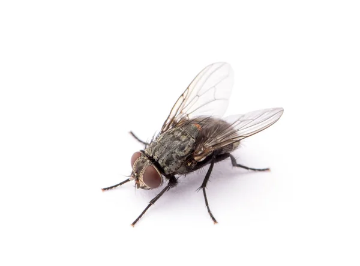
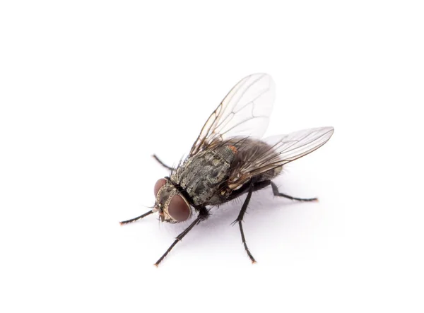

А це її перша друга вебсторінка)
Чому вона в масці?
Так це ж моднявий тренд 2019 роцю!
Значить, прийшов такий собі COVID-19 , і поставив хрест на селфіманію (*звук дівочого пищання*)


Також не можна не згадати, що вищезгадана персона є ярим фанатом одного любительського серіалу "ЛНАМ. Вивчись, якщо зможеш" (produced by Vasyl Kosiv)
*посилання туть*
Там головна героїна має намір стати графічним дезігнеромпф, але їй весь час щось заважає (шиза сценариста)
Ну насправді це було досить нудно, бо 80% екранного часу гг проводила в чотирьох стінах: спала, їла та залипала в моніторчик (типу вчилась)
От лихо, знову по хатам! За цей час наша героїня здобула нові, ДУЖЕ ВАЖЛИВІ скіли для гдшника - навчилась плести сітки, робити коктейлі Молотова, здавати кров, візуалізовувати всю мапу України до кожного села, збирати тривожну валізку.
Мдя...
шо курив сценарист -_-
Та й таке...
Це впринципі все. Не знаю, що ще сказати, Аня тільки те й робить, що дражнить кота або заліпає в серіал!
нудне створіння
Енергозберігаюче!
Тут є приховане біле посилання!
Знайди його)